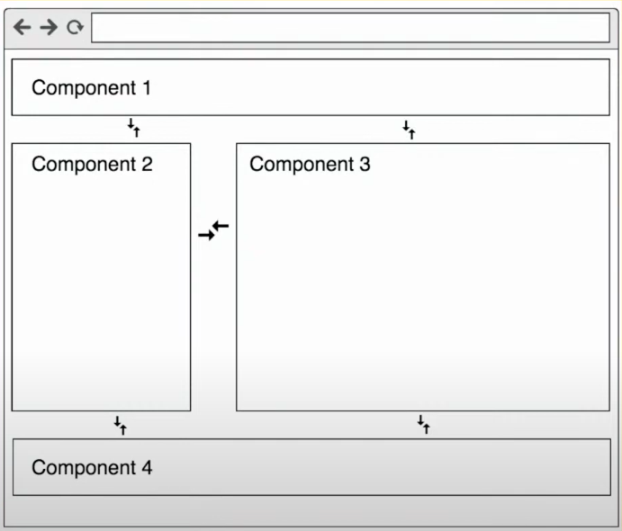
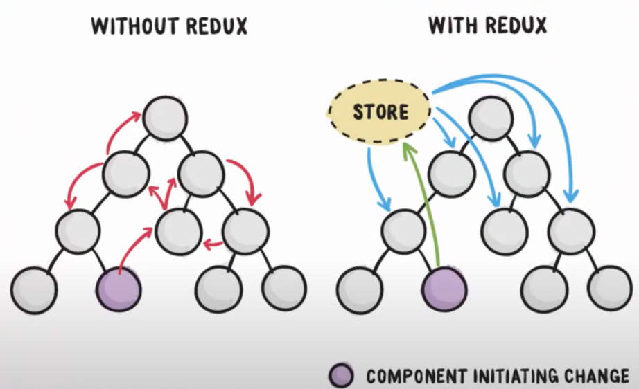
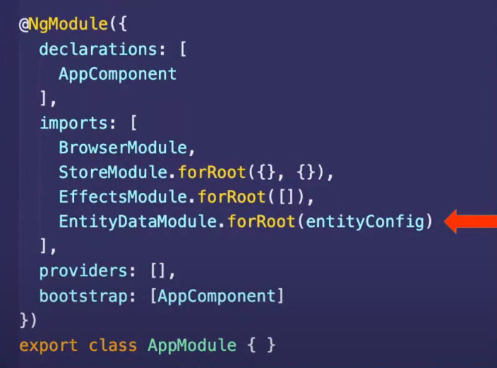
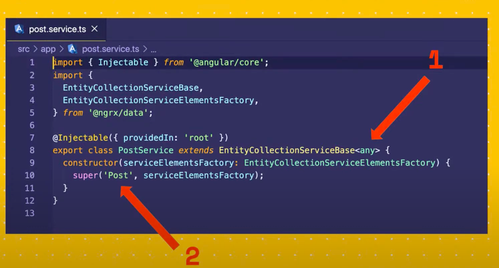
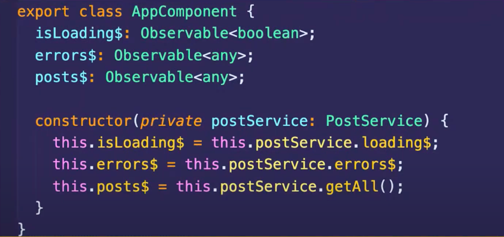
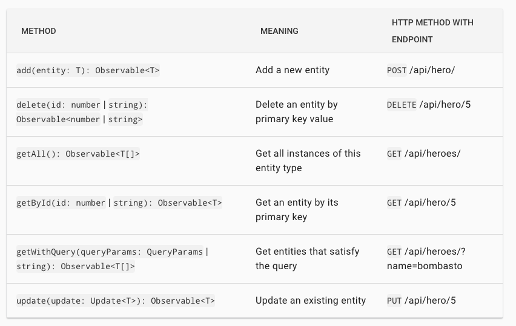

NgRx Data
Abstraction over NgRx Entity


npm i @ngrx/store
npm i @ngrx/effects
npm i @ngrx/entity
npm i @ngrx/dataSetup
Inside Root Module

Define Entities
Last step - update service you used to have

Now Enjoy the service ( from component )

constructor(private postService: PostService) {}
ngOnInit() {
// Get all posts
this.postService.entities$
// add Post
this.postService.add(post);
// Delete Post
this.postService.delete(postId);
// Get Post
this.postService.getById(postId);
// Update Post
this.postService.update(post);
}Available properties

Available Methods

Setup with lazy loaded module ( 99% time you want to use this )
// app.module.ts
@NgModule({
imports: [
StoreModule.forRoot({}),
StoreRouterConnectingModule.forRoot(),
EffectsModule.forRoot([]),
EntityDataModule.forRoot(entityConfig),
]
})
// entity-metadata.ts
import { EntityMetadataMap, EntityDataModuleConfig } from '@ngrx/data';
const entityMetadata: EntityMetadataMap = {
entityname: 'Post'
};
const pluralNames = {};
export const entityConfig: EntityDataModuleConfig = {
entityMetadata,
pluralNames,
};Step 1 - Register Entity Data Service in Lazy loaded module
// Inside lazy loaded module
// user.module.ts
export const userFeatureKey = 'user-ngrx-data';
export const entityMetadata: EntityMetadataMap = {
[userFeatureKey]: {
entityDispatcherOptions: {
optimisticUpdate: true,
},
},
};
export class UsersModule {
constructor(
private eds: EntityDefinitionService,
private entityDataService: EntityDataService,
private userDataService: UserDataService,
) {
this.eds.registerMetadataMap(entityMetadata);
this.entityDataService.registerService(
userFeatureKey,
this.userDataService,
);
}
}Step 2 - Create Entity Data Service
// user-data.service.ts
@Injectable()
export class UserDataService extends DefaultDataService<any> {
API_URL = 'https://jsonplaceholder.typicode.com/users';
constructor(http: HttpClient, httpUrlGenerator: HttpUrlGenerator) {
super(userFeatureKey, http, httpUrlGenerator);
}
getAll(): Observable<UserInterface[]> {
return this.http.get<UserInterface[]>(`${this.API_URL}`);
}
add(user): Observable<UserInterface> {
return this.http.post<UserInterface>(`${this.API_URL}`, user);
}
update(user): Observable<UserInterface> {
return this.http.put<UserInterface>(
`${this.API_URL}/${user.id}`,
user.changes,
);
}
delete(userId): Observable<any> {
return this.http.delete(`${this.API_URL}/${userId}`);
}
// // to make call to backend, in our case it's not required as we are using resolver to load this module
// getById(postId) {
// return this.http.get(`${this.API_URL}/${postId}`);
// }
}Step 3 - Create servive use used to create but extend EntityCollectionServiceBase so you get hold on entiy collection proprty and methods
// user.service.ts
@Injectable({
providedIn: 'root',
})
export class UserService extends EntityCollectionServiceBase<Post> {
constructor(serviceElementsFactory: EntityCollectionServiceElementsFactory) {
super(userFeatureKey, serviceElementsFactory);
}
getUserByIdFromCache(userId) {
return this.entities$.pipe(
map(users => {
return users.find(user => user.id === +userId);
}),
);
}
// Add All your business logic here
}Step 4 - Enjoy The Service From component
constructor(private userService: UserService) {}
ngOnInit() {
this.userService.entities$;
this.userService.add(user);
this.userService.update(user);
this.userService.delete(userId);
}Provide a custom configuration ( url )
First, create a custom configuration object of type DefaultDataServiceConfig :
const defaultDataServiceConfig: DefaultDataServiceConfig = {
root: 'https://my-api-domain.com:8000/api/v1',
timeout: 3000, // request timeout
};
// Provide it in an eagerly-loaded NgModule such as app.module.ts
@NgModule({
providers: [{ provide: DefaultDataServiceConfig, useValue: defaultDataServiceConfig }]
})